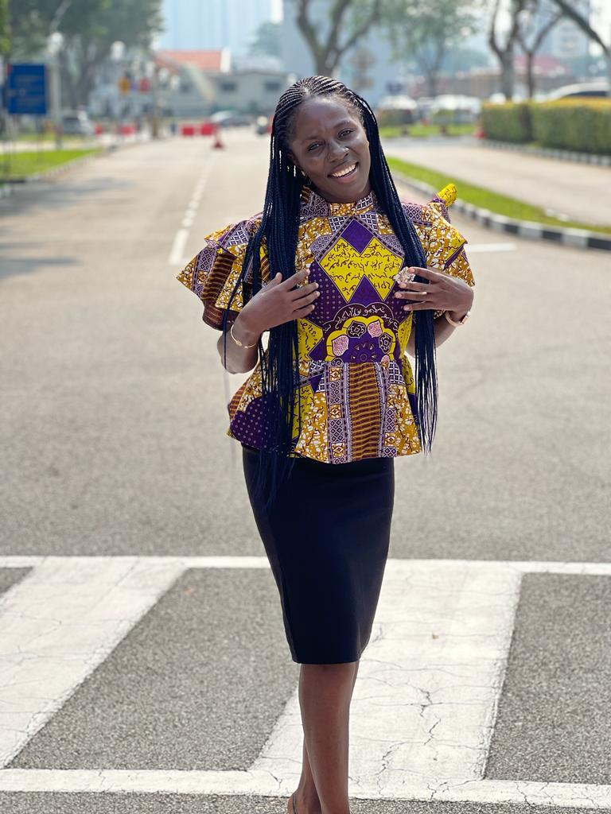

Welcome To The Portifolio Of Happily Made
Welcome to Happily Made clothing, where every
stitch tells a story of passion and crativity. Our brand
is built on the foundation of joy, inspired by the beauty of
everyday life and the happiness found im expressing oneself
through fashion.
At Happily Made clothing, we strive to create unique
and timeless pieces that celebrate individuality and
empower confidence. From casual chic to elegant evening
wear, each garment is carefully crafted with attention
to detail and quality craftsmanship.

Driven by a love for design and a dedication to
sustainability, we source eco-friendly materials and
prioritize ethical producttion practices. Our commiment
to environment responsibility is woven into every
aspect of our brand, ensuring that our clothing not only
looks good but also feels good to wear.
- 
Join us on a journey of style and self-expression.
Explore our collection and discover the joy of
Happily Made Clothing.

We believe you find your style and design and hub into
Happily Made clothing for your outfit.